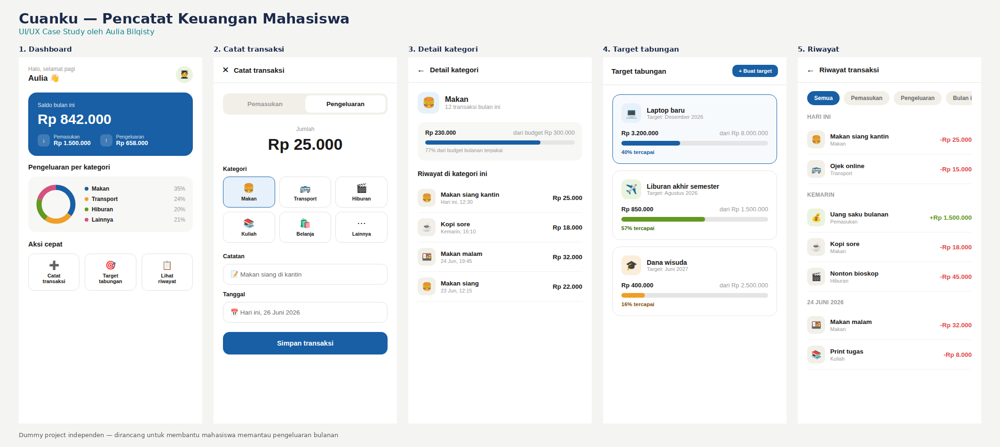

Cuanku — Pencatat keuangan mahasiswa
Merancang dari masalah sendiri: aplikasi sederhana untuk membantu mahasiswa tahu ke mana uang bulanannya pergi.
Latar belakang proyek
Cuanku dirancang untuk membantu mahasiswa memantau uang saku bulanan tanpa proses yang rumit — cukup catat transaksi singkat, lihat ringkasan per kategori, dan pantau target tabungan kecil seperti dana liburan atau laptop baru.

Saya sendiri sering tidak sadar ke mana uang bulanan habis sampai sisa di akhir bulan menipis. Aplikasi pencatat keuangan yang ada biasanya terasa rumit untuk kebutuhan sesederhana mahasiswa.
Input transaksi dibuat secepat mungkin dengan kategori bergambar, dan target tabungan ditampilkan sebagai progress visual supaya terasa memotivasi, bukan sekadar angka.
Satu aksi, satu layar. Setiap halaman hanya menuntut satu keputusan dari pengguna agar tidak kewalahan — terutama penting untuk pengguna yang baru pertama kali mencatat keuangan secara rutin.
Desain ini masih berbasis asumsi pribadi. Langkah berikutnya adalah wawancara singkat dengan 3–5 mahasiswa untuk memvalidasi apakah kategori yang ada sudah sesuai kebiasaan pengeluaran mereka.